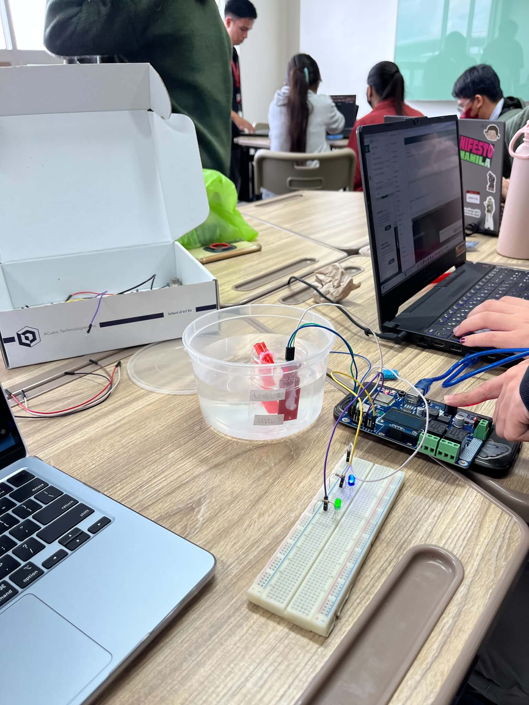

// hello, i’m
Abegail Ete
I’m a Data Analyst
A fourth-year Computer Science student who likes the moment messy data turns into something a person can actually decide from. I work in Excel, SQL, and Power BI — cleaning, shaping, and visualizing data into clear answers.
Power BI
SQL
Excel
// about
I turn raw data into decisions, not just charts.
Most of my work starts somewhere messy — a spreadsheet no one wants to open, receipts, sensor logs — and ends with something clear: a validated dataset, a dashboard, a recommendation. I care a lot about getting the small things right, because in analysis the small things are usually the whole story.
Right now I’m finishing my Computer Science degree at Lyceum of the Philippines University – Cavite, and looking for an internship where I can keep learning by doing real analytical work.
- Dean’s Listeracademic standing
- 3rd placeACube IoT Bootcamp
- Power BI · Pythoncertified (LinkedIn, Cisco)
- BS Computer ScienceLPU – Cavite
// skills
The stack I reach for
Programming
Databases & Tools
// work
Featured Work
Dec 2025 – Feb 2026
Product Sourcing Assistant — Coupang Resale
Screened and validated 200+ product listings against price, demand, and logistics criteria. Built Excel datasets tracking SKUs and listing data, ensuring accuracy and searchability. Reworked translated product descriptions to improve marketplace clarity and listing success.
Ask me about it
2024
3rd place
IoT Flood Alert Prototype
An IoT flood-monitoring system that reads real-time water-level data from sensors and triggers automated early-warning alerts. I built the threshold logic and visualized sensor trends to support faster disaster-response decisions.

2025
ReceiGo — Mobile Expense Manager
A mobile app that turns photos of receipts into structured expense data using image processing and AI, then surfaces spending patterns through dashboards. I documented the data flow end to end to keep the pipeline maintainable.
Explore the repo// certifications
Certifications
- IT Specialist — HTML & CSSCertiport
- Power BI: Working Together with Microsoft 365 AppsLinkedIn
- Python Essentials 1 & 2Cisco
- IoT BootcampACube Technologies